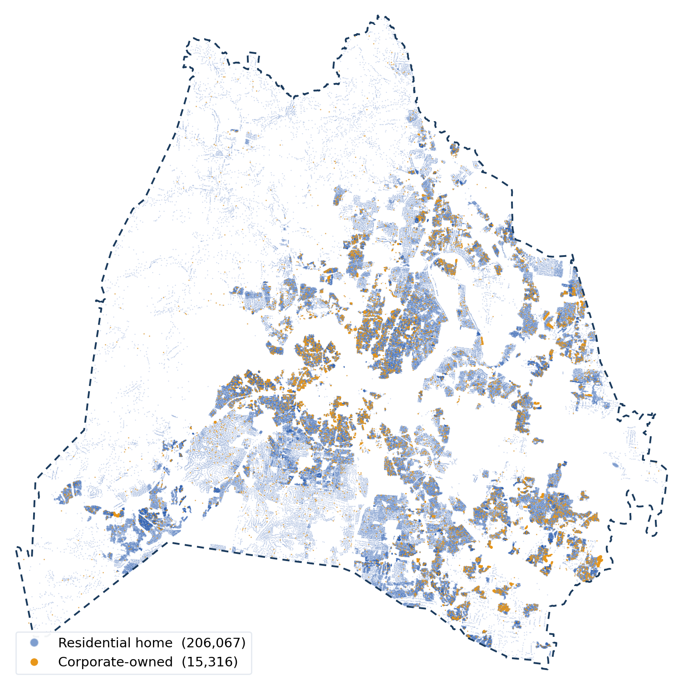
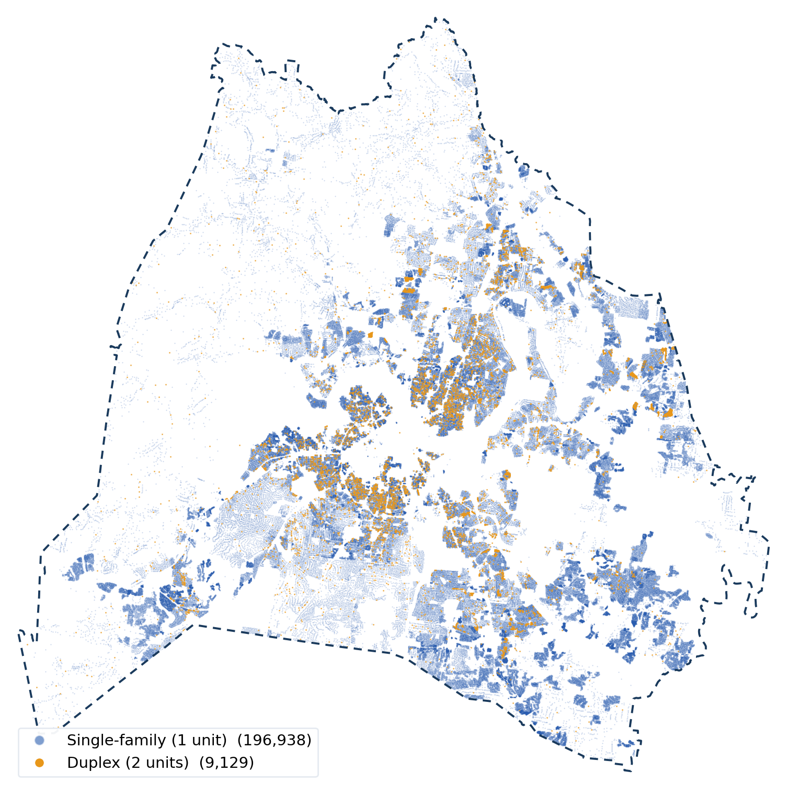
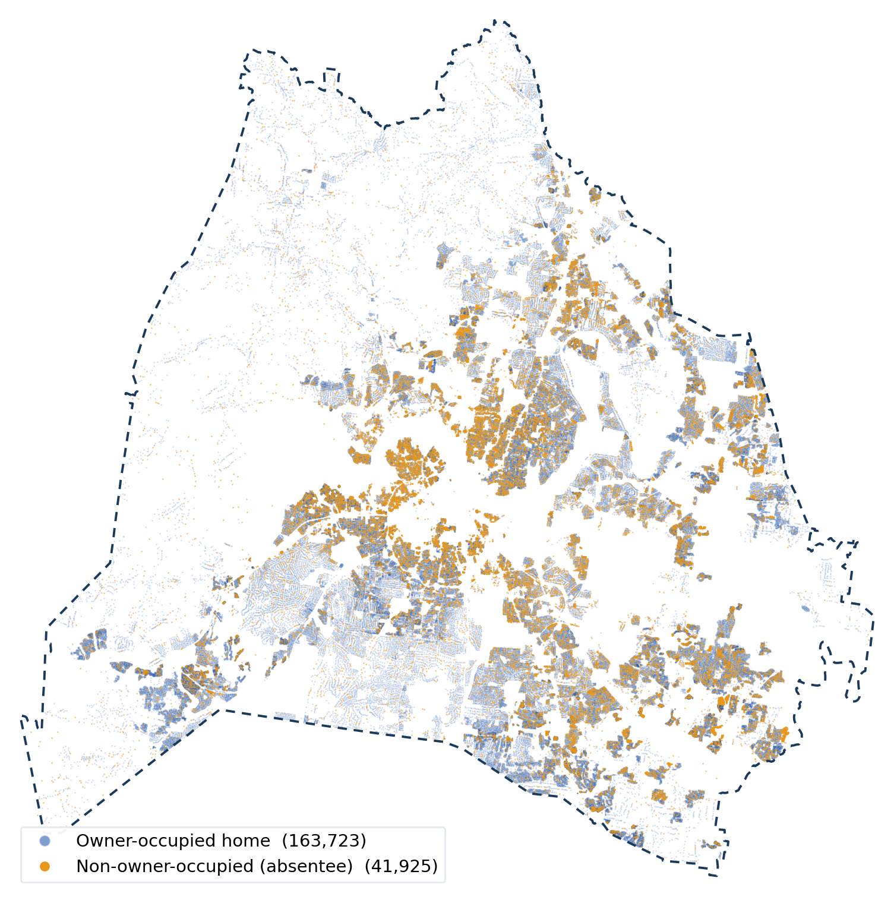

This project studies one clearly bounded slice of Davidson County: the small-scale residential homes an ordinary buyer, or an institutional investor, would compete for. This page defines exactly what is in and out.
Every parcel in the Metro Nashville cadastral that is a one- or two-unit residential home, single-family houses, residential condos, duplexes, and zero-lot-line homes, excluding high-rise condo towers, common areas, and open space. In assessor terms:
(DUCount = 1 OR DUCount = 2)
AND LUDesc IN ('SINGLE FAMILY', 'ZERO LOT LINE', 'DUPLEX', 'RESIDENTIAL CONDO')
AND FeatureType NOT IN ('Multistory Condo', 'Multistory Common Area', 'Open Space')
205,934
Parcels in scope
215,043
Dwelling units
$121.6B
Total appraised
$590,374
Avg appraised value
2,003
Avg finished sq ft
0.64
Avg lot (acres)
Where the homes are

Every one- and two-unit home in the research scope (206,067 mapped; the balance of the 205,934 have no assessor coordinate). Homes owned by a corporate or business entity are drawn in gold: they cluster in the suburban rings, Antioch and Cane Ridge to the southeast, Madison and Old Hickory to the north, and Bordeaux to the northwest, not the urban core. County boundary filtered to the assessor polygon (OBJECTID = 4). Metro Nashville Cadastral, parcel centroids (last accessed July 2, 2026).

The same universe split by dwelling-unit count. One-unit single-family houses (196,938) spread across every suburb; two-unit duplexes (9,129, gold) concentrate tightly in the urban core, East Nashville, Wedgewood-Houston, and the neighborhoods just outside downtown, where older lots and permissive zoning allowed two units. Metro Nashville Cadastral, DUCount = 1 vs DUCount = 2 (last accessed July 2, 2026).
Why this definition, the ROAD to Housing Act
These boundaries are not arbitrary. They track the 21st Century ROAD to Housing Act (H.R. 6644, §1001), passed by the House and Senate in June 2026. The Act defines a single-family home as a home with one or two units, precisely the scope on this page, and prohibits a large institutional investor, defined as a for-profit company that owns at least 350 such homes, from acquiring more of them. That 350-home threshold is the definition of “institutional” used throughout this project.1
Composition by housing type
Housing type
Parcels
Dwelling units
Total appraised
Avg value
Avg sq ft
Single family
156,536
158,462
$96.77B
$618,200
2,073
Residential condo
36,931
37,011
$19.86B
$537,750
1,832
Duplex
7,048
14,091
$3.48B
$493,871
1,950
Zero lot line
5,419
5,479
$1.47B
$270,753
1,216
TOTAL
205,934
215,043
$121.58B
$590,374
2,003
Notes: The universe is assessed at a 25.5% assessed-to-appraised ratio ($31.01B assessed), confirming it is essentially all residential-class property. Grouped by LUDesc; statistics count(ParID), sum(DUCount, TotlAppr, TotlAssd), avg(Acres, FinishArea, TotlAppr). Metro Nashville Cadastral, Ownership Parcels (MapServer/4) (last accessed July 2, 2026).
Building characteristics
3
Median bedrooms
2
Median full baths
1
Median stories
1985
Median year built
2,003
Avg finished sq ft
BEDROOMS
FULL BATHROOMS
Notes: Building characteristics from the Metro Nashville assessor's CAMA record (the “Comper” property-characteristics data), paired to the cadastral by parcel ID for the residential scope (~224,000 homes with a building record). The typical home in scope is a 3-bedroom, 2-bath, one-story house built around 1985. Year built and finished area also appear on the Parcel Overview. (last accessed July 2, 2026).
Owner-occupied vs. non-owner-occupied

Owner-occupied homes (163,723) versus absentee-owned homes (41,925, gold), where the owner's mailing ZIP differs from the property ZIP. Absentee ownership tracks the same southeastern and northern suburban bands where corporate buyers concentrate, and thins out in the wealthier southwestern neighborhoods. This absentee pool is the universe this project tracks for corporate and institutional ownership. Metro Nashville Cadastral, OwnZip = PropZip proxy (last accessed July 2, 2026).
Notes: Owner-occupancy proxy = owner mailing ZIP equals property ZIP (OwnZip = PropZip). Within the scope, 163,300 homes (79.3%, $100.2B) are owner-occupied and 42,633 (20.7%, $21.4B) are absentee-owned, the pool this project tracks for institutional and corporate ownership. Metro Nashville Cadastral (last accessed July 2, 2026).
What is excluded, and why
Mobile homes & mobile home parks, a distinct housing and tenure market.
Apartments & large multifamily (3+ units), 1,921 parcels holding ~121,000 units; institutional ownership there is a separate, well-studied market.
High-rise / multistory condo towers, common areas, open space, excluded by feature type to keep the unit definition clean.
Vacant land, commercial, industrial, institutional, and exempt parcels, not housing a resident today.
In short: of Davidson County's 286,721 total parcels and 355,677 dwelling units, this study focuses on the 205,934 one- and two-unit homes that make up the for-sale and single-family-rental market.
The scope in context of Davidson County
In scope (1–2 unit homes)
All of Davidson County
Scope share
Parcels
205,934
286,721
71.8%
Dwelling units
215,043
355,677
60.5%
Total appraised value
$121.6B
$252.8B
48.1%
The one- and two-unit homes in scope are 72% of all parcels but only 48% of the county's appraised value, the rest sits in apartments, commercial, and institutional property. See the whole-county picture on the Davidson County Parcel Overview.
Sources
1. 21st Century ROAD to Housing Act, H.R. 6644, 119th Cong. § 1001 (2026); Cong. Rsch. Serv., R49015, How Does the 21st Century ROAD to Housing Act Address Institutional Investors?, congress.gov/crs-product/R49015 (last accessed July 2, 2026).
Parcel and value figures: Metro Nashville Cadastral, Ownership Parcels (ArcGIS MapServer/4), live snapshot July 2, 2026.
Sources & live queries
Every figure is replayable against the live county and federal servers (last accessed July 2, 2026). See the full query library on the Parcel Overview.
Background: the parcel universe
All parcels — count, appraised & assessed value: run query ↗
Land use & the residential scope
All land-use descriptions (by LUDesc): run query ↗
Residential descriptions (DUCount > 0): run query ↗
The final scope filter (this page’s 205,934 count): run query ↗
Building characteristics (assessor CAMA)
Parcels with building characteristics: run query ↗